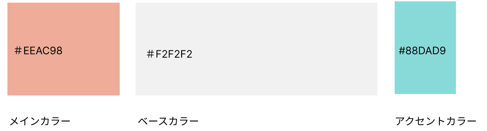
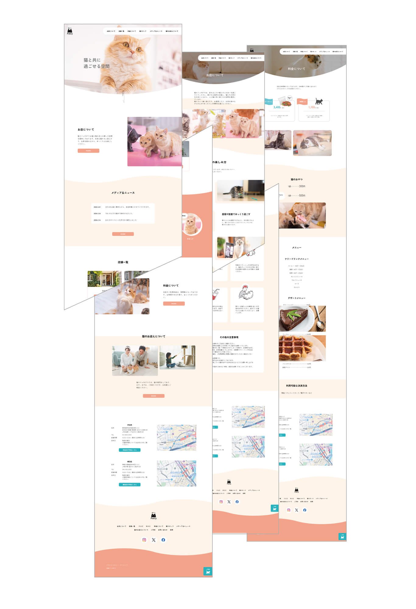
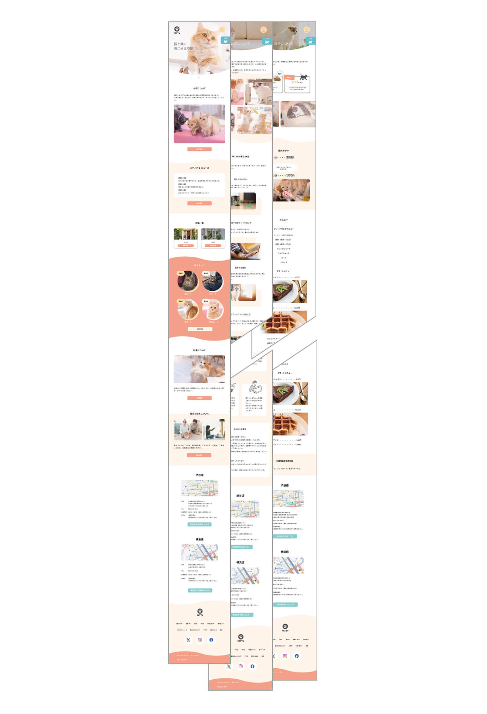
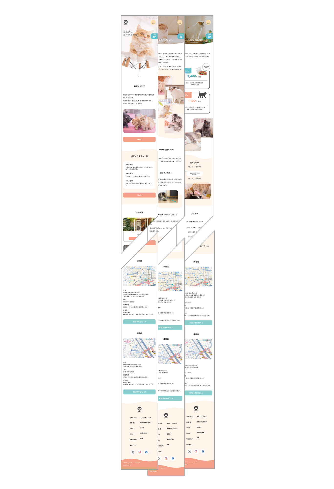
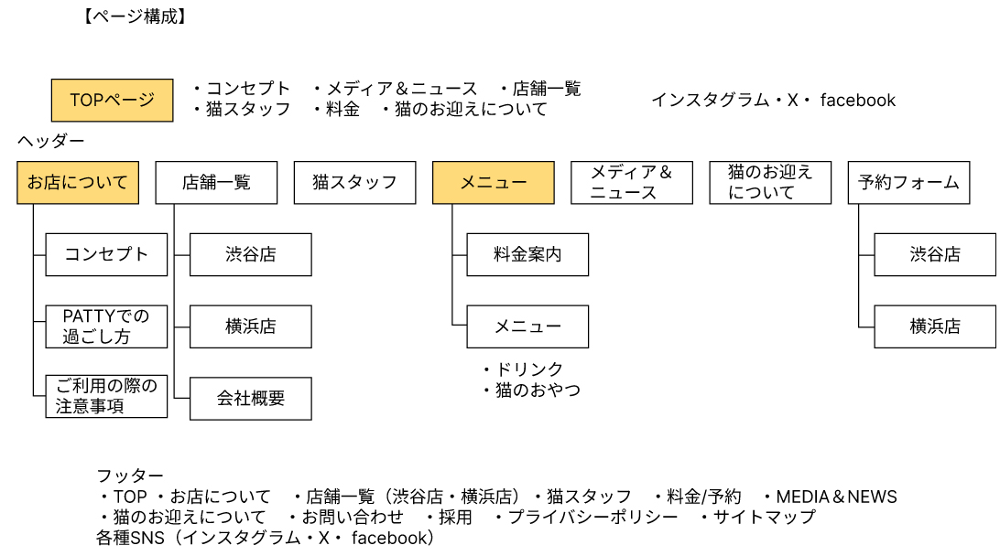
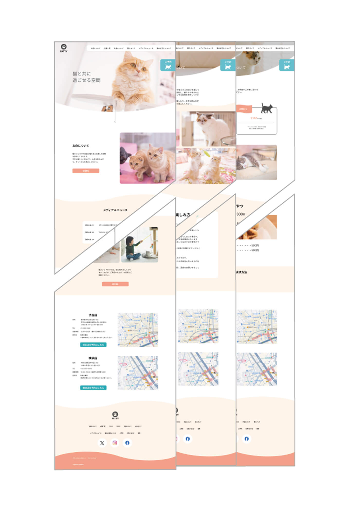
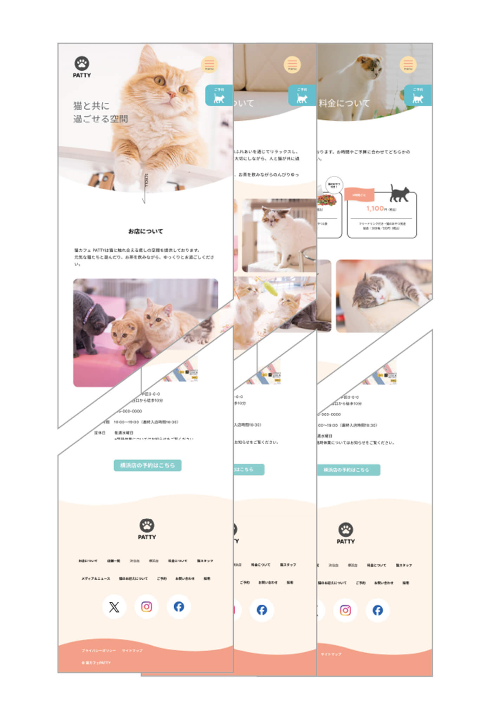
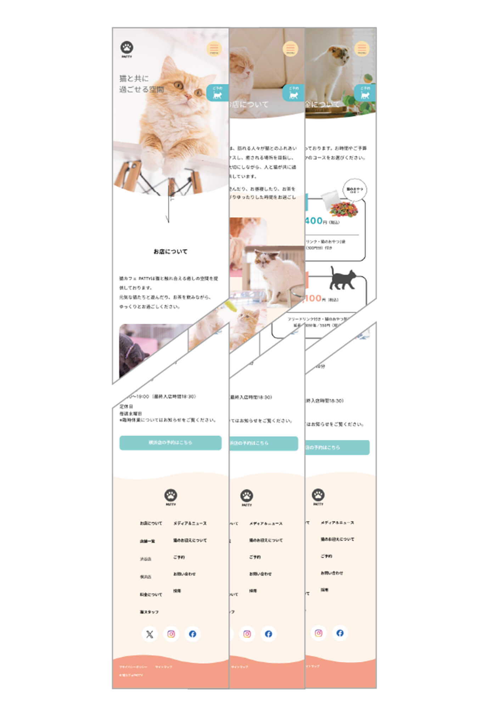

URL
作業期間
2024/7/6～2024/8/24
作業範囲
- 情報収集（10h）
- 企画・コンセプト（1h）
- ワイヤーフレーム（5h）
- デザイン（5h）
- 素材収集（5h）
- マップ作成（1h）
- ロゴ作成（1h）
- HTML（7h）
- CSS（20h）
- jQuery（20h）
- レスポンシブ（20h）
企業コンセプト
渋谷駅と横浜駅にお店を構える猫カフェPATTY。猫と共に過ごすことで、癒しの空間を提供することを目的としている。ドリンクの提供や猫の販売も行っている。
サイトの目的
- 1.既存顧客の来店
- 2.リピート客の来店
- 3.新規顧客の来店
ターゲット
20代〜30代前半の女性をメインターゲットとする。1回に使用する価格は3,000円を予定している。
ターゲット詳細
- 名前
- 佐藤 美香（さとう みか）
- 年齢
- 20歳
- 性別
- 女性
- 居住地
- 東京
- 職業
- 大学生
- 経済状況
- アルバイトで月3万円を稼ぐ。そこまでの余裕はない。
- ライフスタイル
- 実家から大学まで通っている。休日は、バイトか友達と遊ぶことが多い
- パソコンスキル
- スマホ中心の生活。パソコンは授業でのみ使う。
- その他
- 友人と猫カフェに行こうと計画している。どこの猫カフェに行くか検討中。
- 名前
- 山本 彩花（やまもと あやか）
- 年齢
- 32歳
- 性別
- 女性
- 居住地
- 東京
- 職業
- 会社員
- 経済状況
- 30代OLの平均的な年収。都内に住んでいるので出費は多い。
- ライフスタイル
- 平日は17時まで仕事。休日は家にいることが多い。
- パソコンスキル
- 普段はスマホを使用しているが、仕事ではパソコンを使用しているため、難なくパソコンを使うことができる。
- その他
- 休日に一人でどこかに行こうか考えている。猫カフェも候補に入っている。
デザインについて
くすみ系の色を使用して、落ち着いたおしゃれな雰囲気を出しました。可愛らしい雰囲気を演出するため、角丸や円をなるべく使用しております。ただ、ポップなイメージではなくあくまでもメインターゲットが20〜30代の女性なので、柔らかなおしゃれを出すために角丸は付けすぎず、5px程度にとどめております。猫の写真をなるべく使用することで、多種多様な在籍猫をアピールしており、来店意欲を掻き立たたせています。「お店について」のページの「お願いごと」の欄でイラストを使用することにより他の項目と差別化をはかり、目につく仕様となっております。トップページに記載している猫のスタッフの写真の「ココ」と「ジジ」は実際に私の実家で飼っている猫です。

デザイン
- 
- 
- 
サイトマップ

デザインカンプ
- 
- 
- 
ワイヤーフレーム


企業ロゴ

以下、ロゴの制作過程です。

コーディングについて
今回、jQueryを初めて実装しました。在籍猫の可愛さを最大限にアピールできるように、トップページはvegasを使用して写真を4枚切り替えで表示しています。また、柔らかさを出すために、50px進むとコンテンツがふわっと出でくるコードを全体的に入れております。nav部分は、flex-wrap:wrap;を使用することにより、ハンバーガーメニューに切り替わるまでも不自然にならないnavになるようレスポンシブデザインを心がけています。